System Design Mastery
Master scalable systems with premium insights
🧠 How to Talk in HLD (High-Level Design) Interviews
🎯 1. Requirement Clarification
Q1. Who is the customer and for whom are we designing this system?
- Identify target users (end users, businesses, internal systems)
📈 2. Scale & Estimation
Q3. How many users will use the system (current + future)?
Example: Design for 1M → scale to 10M
Q4. What is the expected traffic (RPS, read/write ratio)?
Helps decide architecture
🌍 3. Scope Definition
Q5. Is the system regional (India) or global?
- Global → CDN, multi-region
- Regional → simpler setup
⚖️ 4. CAP Theorem
Q6. What does the system prioritize: Consistency or Availability? Why?
- Payments → Consistency
- Feed systems → Availability
If you choose
Consistency then follow ACID principles.
If availability is more important, I would design using BASE and eventual consistency.
🗄️ 5. Database Design
Q7. Which database should we choose and why?
SQL vs NoSQL
Q8. How does the database work internally?
Indexing, partitioning, replication
🔄 6. System Workflow
Q9. What is the end-to-end flow of the system?
Step-by-step sequence of events
Example:
- User sends request
- API Gateway receives
- Service processes
- DB read/write
- Response sent
👉 This is the backbone of your design.
🔌 7. API Design
Q10. What APIs are we designing?
Define endpoints clearly
Q11. What is the exact request and response format?
Show JSON structure
Q12. Who sends the request and who receives the response?
Client → Backend → Service
Q13. How do we handle pagination and filtering in GET APIs?
Example: ?page=1&limit=10
Be specific:
Request
POST /order
{
"user_id": "123",
"items": ["pizza"]
}
Response
{
"order_id": "789",
"status": "confirmed"
}
Also explain:
- Who sends request?
- Who processes it?
🧩 8. Microservices Design
Q14. What microservices are required?
User, Order, Payment, etc.
Q15. What is the responsibility of each microservice?
Q16. Can you explain the high-level architecture (HLD diagram verbally)?
🌐 9. Communication Design
Q17. How does client communicate with server?
HTTP/HTTPS
Q18. How does server communicate back (real-time)?
WebSockets
Q19. How do microservices communicate with each other?
REST / gRPC / Message Queue
🔁 10. Data Flow & Ownership
Q20. What data is required in the system?
Q21. Which Microservices owns which data?
Each service owns its DB
Q22. How does data flow between services?
Event-driven / APIs
🧠 11. Design Patterns
Q23. Which design patterns are used and why?
Singleton, Factory, Observer, Circuit Breaker
👉 Choosing correct DP = strong signal.
🚀 12. Scalability
Q24. How will the system scale with increasing users?
Horizontal scaling
Q25. How do we distribute traffic?
Load balancers
⚡ 13. Caching
Q26. Where will caching be used?
Redis, CDN
Q27. What caching strategies will be used?
Geo-based caching, eviction policies
🛡️ 14. Failures, Fault Tolerance
Q28. What happens when a service fails?
Retry, fallback
Q29. How is data protected?
Replication, backups
❤️ 15. Health Checks
Q30. How do we monitor service health?
Heartbeats, health APIs
📊 16. Logging & Monitoring
Q31. How do we log system activity?
Q32. How do we monitor performance?
Q33. How do we analyze logs and metrics?
🔐 17. Security
Q34. How is the system secured?
Authentication, authorization
Q35. How is data protected?
Encryption, HTTPS
🧮 18. Algorithms & Data Structures
Q36. Are any algorithms used in this system?
Like in Google Maps use Dijkstra
Q37. What data structures are required?
🍔 Real-World Thinking (Food Delivery Example)
🔍 1. Understanding Existing Systems
Q38. How does a food delivery app work end-to-end?
⚖️ 2. Comparison Thinking
Q39. What is the difference between different food delivery apps like Swiggy vs Zomato?
Why is architecture designed that way?
Why not a different approach?
Q40. Why build a new app if one already exists? What's unique?
- Faster delivery?
- Better pricing?
- Better UX?
🧱 3. Components
Q41. What are the main components of the system?
- Mobile App
- Backend
- Database
- Payment Gateway
🌐 4. Networking & Communication
Q42. How do components communicate internally and how they are performing in outside world?
🗃️ 5. Data Storage
Q43. What are the datastore options and why choose one?
SQL vs NoSQL ..
🔬 6. Deep Understanding
Q44. How does the database work internally?
⚖️ Trade-offs (Very Important)
Q46. Why did you choose this design over other approaches?
👉 Key rule:
There is NO
single
correct answer.
What matters is explaining WHY you chose something and WHY not others.
🆚 HLD vs LLD
🏗️ HLD
Q47. What is covered in High-Level Design?
- System components
- Networking
- Databases
- Scalability
🧱 LLD
Q48. What is covered in Low-Level Design?
- Code structure
- Classes
- Functions
- Design patterns in code
✅ Final Flow to Speak in Interview
🎤 Final Meta Question
Q49. How should I approach answering an HLD interview question step by step?
👉 Answer like this:
- Clarify requirements
- Define scale
- Identify components
- Explain data flow
- Design APIs
- Add scalability
- Add caching
- Handle failures
- Add security
- Explain trade-offs
💡 Golden Line
👉 In HLD interviews, they are NOT checking if you know the "right answer"
They are checking:
- How you think
- How you justify decisions
- How you handle trade-offs
📝 Interview Approach
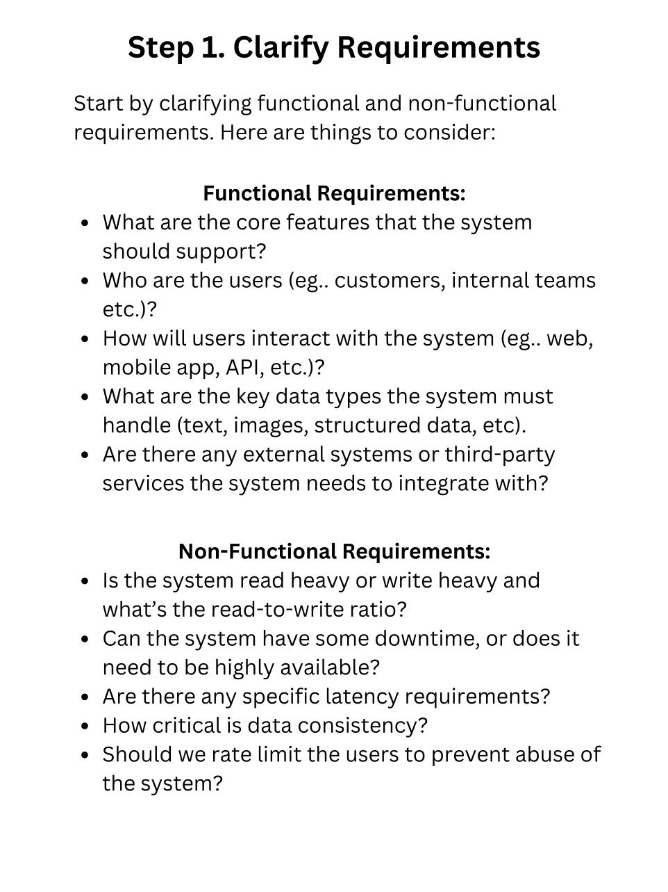
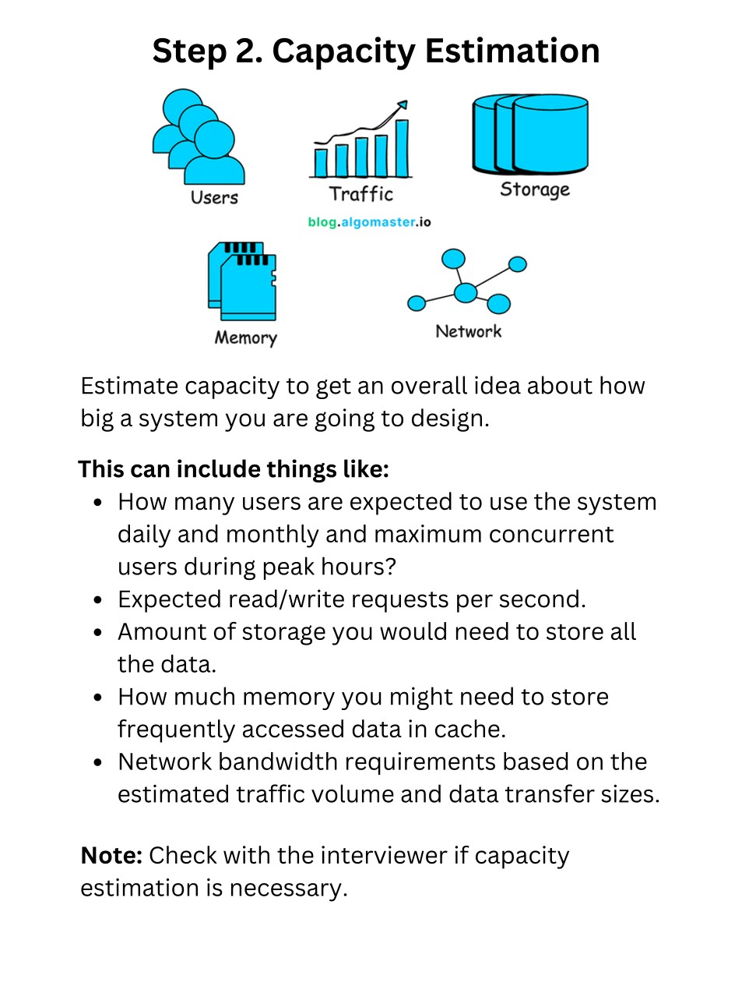
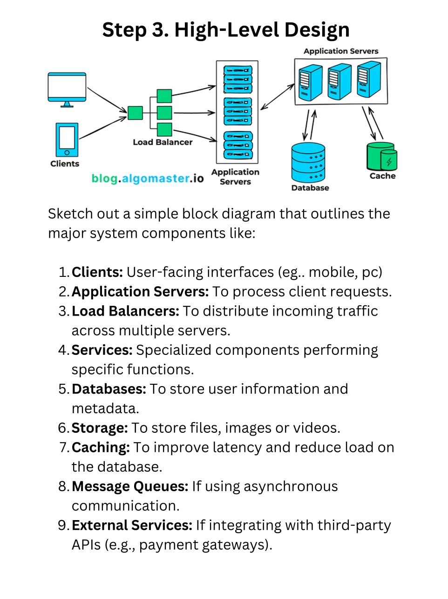
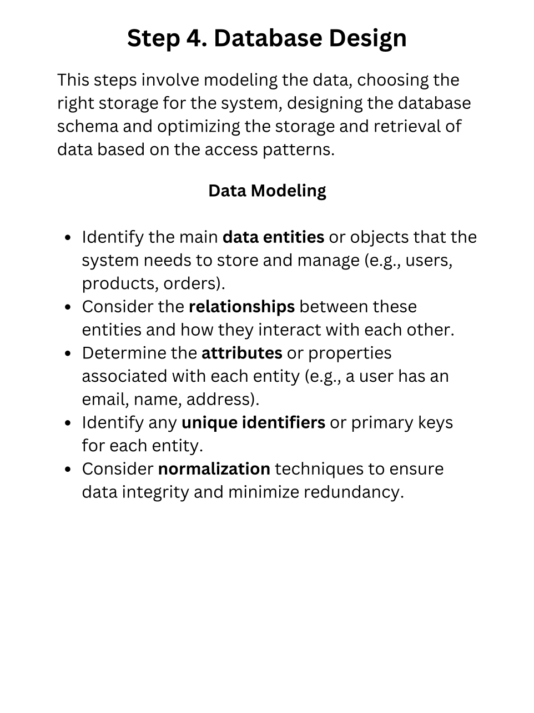
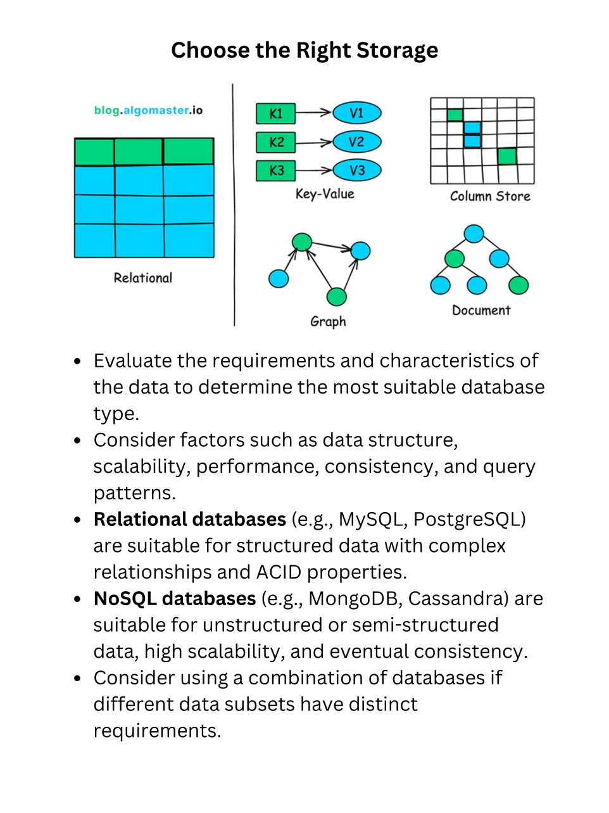
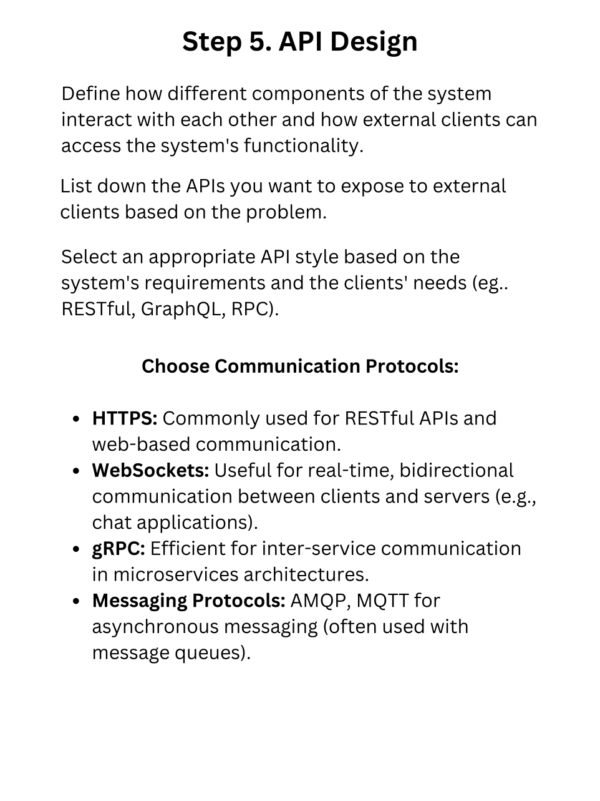
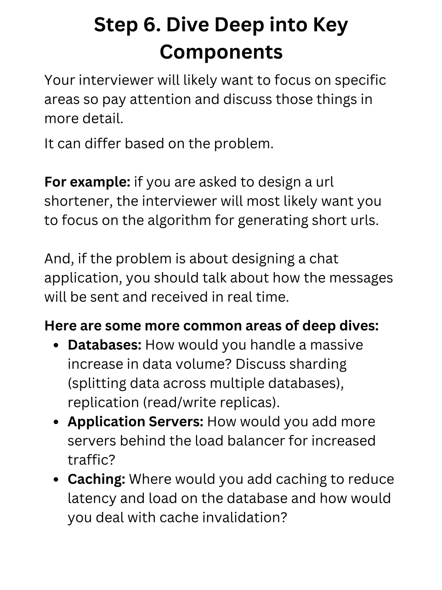
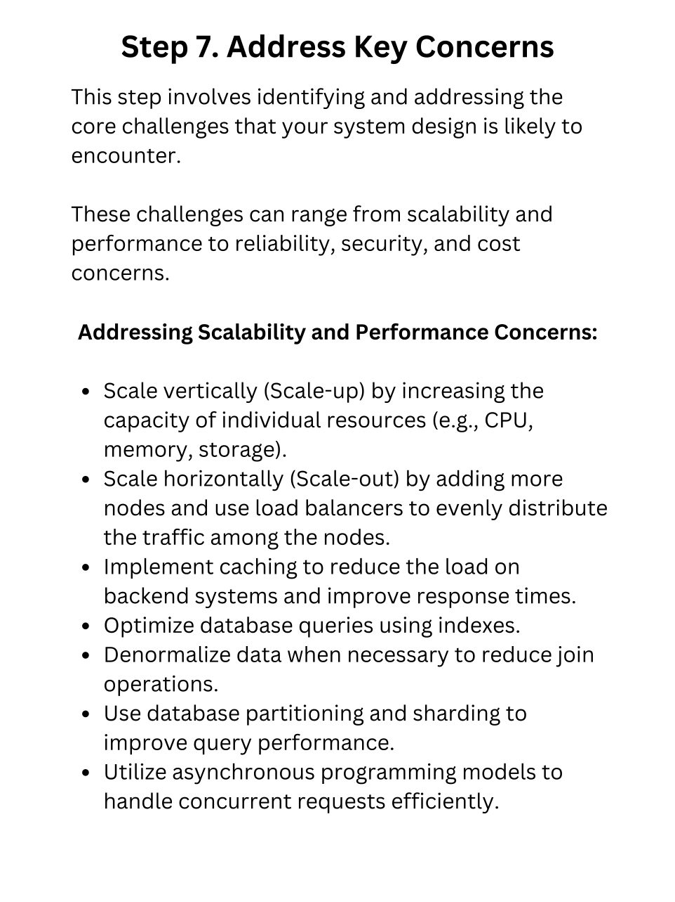
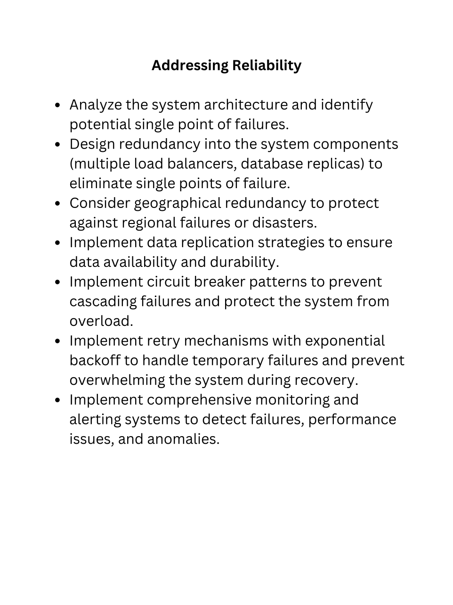
📝 Interview Tips
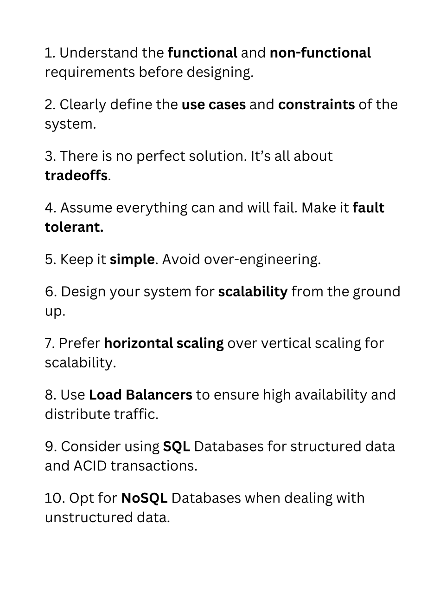
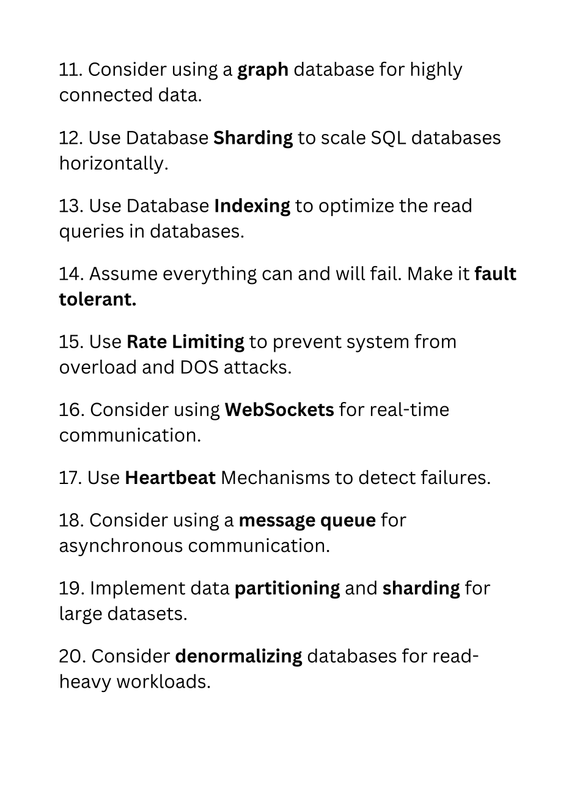
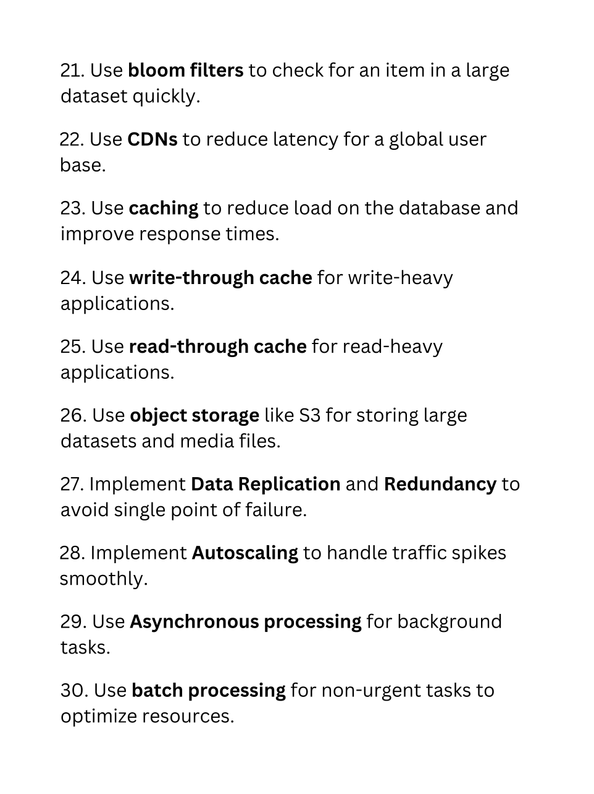
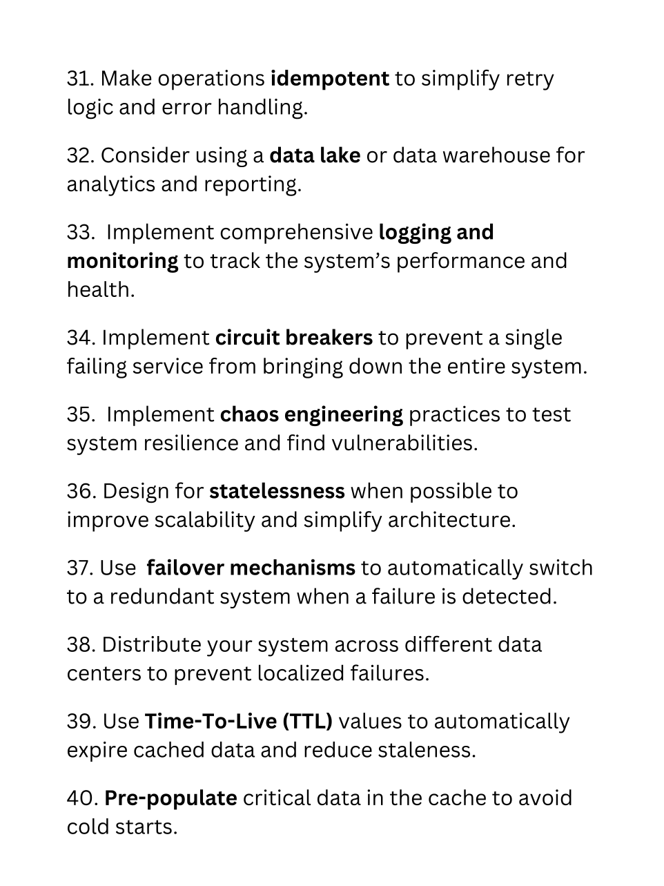